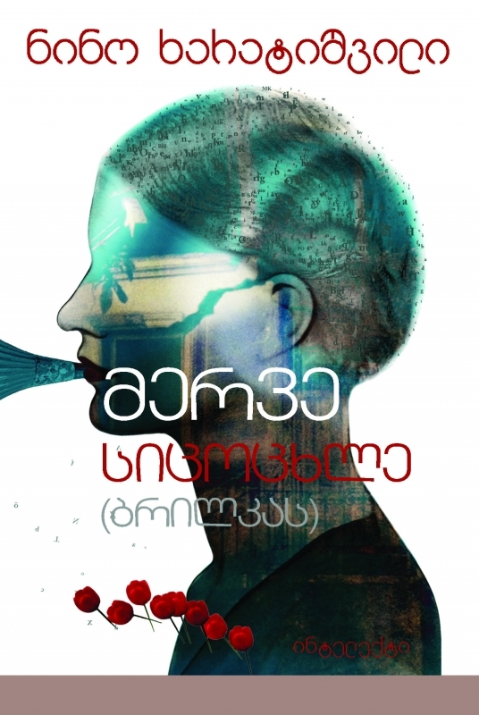

მერვე სიცოცხლე
ინფორმაცია წიგნზე
ავტორი: ნინო ხარატიშვილი
ჟანრი: რომანი, კლასიკა
გამოშვების თარიღი: 2017 წელი
აღწერა:
საქართველო, 1900 წელი: შოკოლადის ცნობილი მწარმოებლის ქალიშვილის, სტასიას დაბადებით იწყება ეს ამაღელვებელი ოჯახური საგა, რომელიც ექვს თაობას მოიცავს. სტასია შეძლებულ საზოგადოებრივ ფენაში იზრდება და ძალზე ახალგაზრდა ცოლად მიჰყვება თეთრგვარდიელ სიმონ ჯაშს, რომელსაც ოქტომბრის რევოლუციის წინა საღამოს მეუღლისაგან შორს, პეტროგრადში გზავნიან. როდესაც სტალინი ქვეყნის სათავეში დგება, სტასია თავის ორ შვილთან, კიტისა და კოსტიასთან ერთად თბილისში, თავის დასთან, ქრისტინესთან, თავბრუდამხვევი სილამაზით ცნობილ ქალთან, აფარებს თავს. მაგრამ საიდუმლო სამსახურის ხელმძღვანელი ლავრენტი ბერია მას თვალს დაადგამს, რასაც საბედისწერო შედეგი მოჰყვება...
გერმანია 2006: ბერლინის კედლის დამხობისა და სსრკ-ის დაშლის შემდეგ საქართველოში არეულობაა. სტასიას უნიჭიერესი შვილთაშვილი ნიცა საცხოვრებლად ბერლინში გადადის. როდესაც ნიცას თორმეტი წლის დისშვილი ბრილკა დასავლეთში მოგზაურობის შემდეგ საქართველოში დაბრუნებაზე უარს აცხადებს, ნიცა მას მოძებნის. სწორედ ბრილკას უამბობს ჯაშების ოჯახის მთელ ისტორიას – უყვება რვა ცხოვრებისა და იმ წითელი საუკუნის შესახებ, რომელშიც ყველანი ისე არიან ჩაქსოვილნი, როგორც ძაფები ხალიჩაში.
„წიგნი, რომელიც ერთიანად გიპყრობს. 31 წლის ავტორის ხმა უკვე ერთ-ერთი ყველაზე ძლიერი და შთამბეჭდავია დღევანდელ გერმანულ ლიტერატურაში: ნინო ხარატიშვილი ოსტატურად უკავშირებს ერთი ქართველი ოჯახის სულისშემძვრელ ცხოვრებას მეოცე საუკუნის რეოლუციათა ისტორიას. საუკუნის რომანი, რომელიც კითხვას მოგაწყურებთ და ძლიერი ახალგაზრდა ქალი, რომელიც თავისი სამშობლოს მამაკაცთა საზოგადოებისაგან გათავისუფლდა. მასშტაბური ისტორიული რომანი, ადამიანური ტრაგედიებით ისევე სავსე, როგორც რეალური ცხოვრება“.
ნორბერტ კრონი, „სათაურები, თეზისები, ტემპერამენტები“.
„ნინო ხარატიშვილმა ევროპის ისტორია ოჯახის ისტორიის სახით ხელახლა მოგვითხრო. წლის საუკეთესო გერმანული რომანი. ფენომენალურია!“
ნინო ხარატიშვილი წარმოშობით ქართველი თეატრის რეჟისორი, დრამატურგი და რომანისტია.
1998 წლიდან 2003 წლამდე ნინო ხარათიშვილი ხელმძღვანელობდა დამოუკიდებელ, ორენოვან გერმანულ-ქართულ თეატრალურ დადგმას „Fliedertheater“, რომელსაც ჰქონდა რამდენიმე სპექტაკლი და სტუმრად წარმოდგენა საქართველოსა და გერმანიაში. 2000-2003 წლებში სწავლობდა კინოსა და თეატრის სახელმწიფო სკოლაში კინოსარეჟისოროზე. 2003 წელს ჰამბურგის თეატრალურ აკადემიაში დაიწყო თეატრის რეჟისურის სწავლა, რომელიც წარმატებით დაასრულა 2007 წელს მისი სპექტაკლით „ჩემი და შენი გული“. მედეია“ დასრულდა. ნინო ჰარათიშვილი ასევე დრამატურგია; მისი ტექსტები გამოქვეყნებულია და ნაწილობრივ დადგმულია თავად. ამის მაგალითია მედეას მითის გადამუშავება მისი დიპლომის წარმოებისთვის. დაწერილი აქვს რამდენიმე პროზაული ტექსტი და პიესა, რომლებიც გამოიცა როგორც გერმანიაში, ასევე საქართველოში.